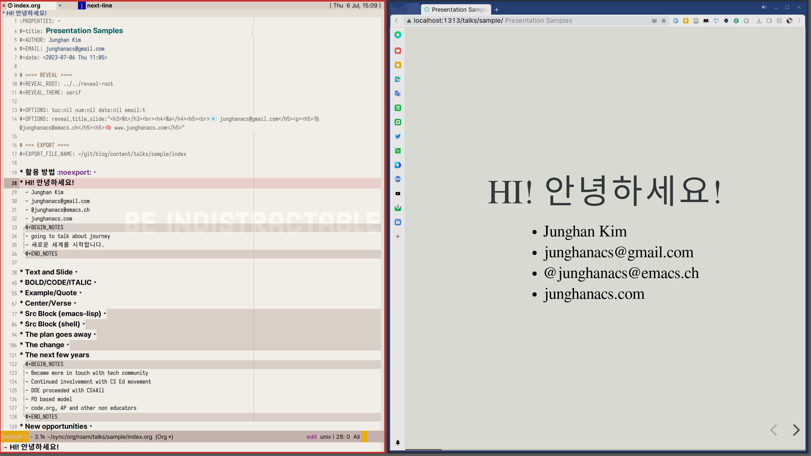
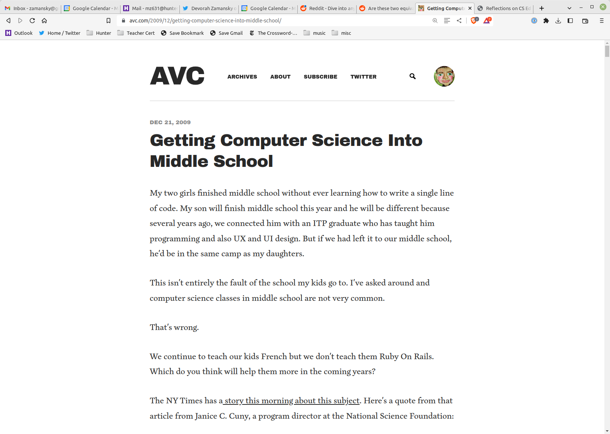
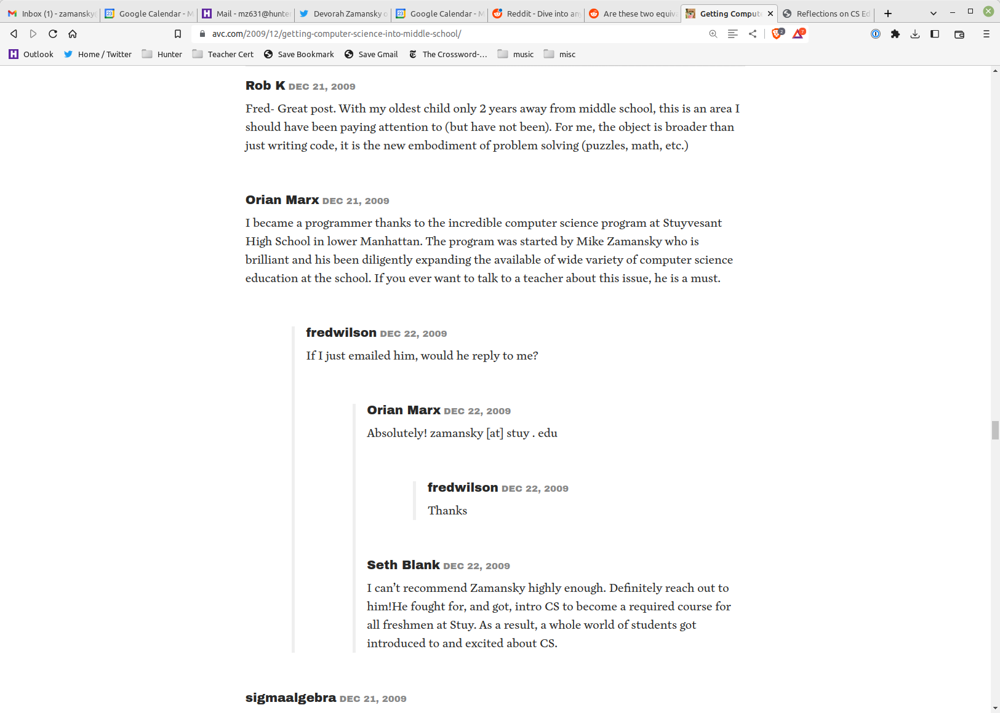

편집 중인 Org 파일과 슬라이드

org-code : ~ (org-hugo-use-code-for-kbd t)org-verbatim : =':' 을 애용한다. 1 라인 블록.
안녕하세요. 간단해서 좋습니다.
example : 앞에 탭 사이즈 공백이 들어 간다.
위에 요약문의 분량입니다. 대략 2.5 줄 정도 입니다. 한글로.
quote
위에 요약문의 분량입니다. 대략 2.5 줄 정도 입니다. 한글로.
center
위에 요약문의 분량입니다. 대략 2.5 줄 정도 입니다. 한글로.
verse
위에 요약문의 분량입니다. 대략 2.5 줄 정도 입니다. 한글로.
(with-eval-after-load 'ox-hugo
(setq org-hugo-auto-set-lastmod 't
org-hugo-section "posts"
org-hugo-suppress-lastmod-period 43200.0
)
$ find -name "*.java" -o -name "*.properties" | \
grep trunk | \
grep src/main/java | \
xargs grep -ni --color IOObjectLoader

